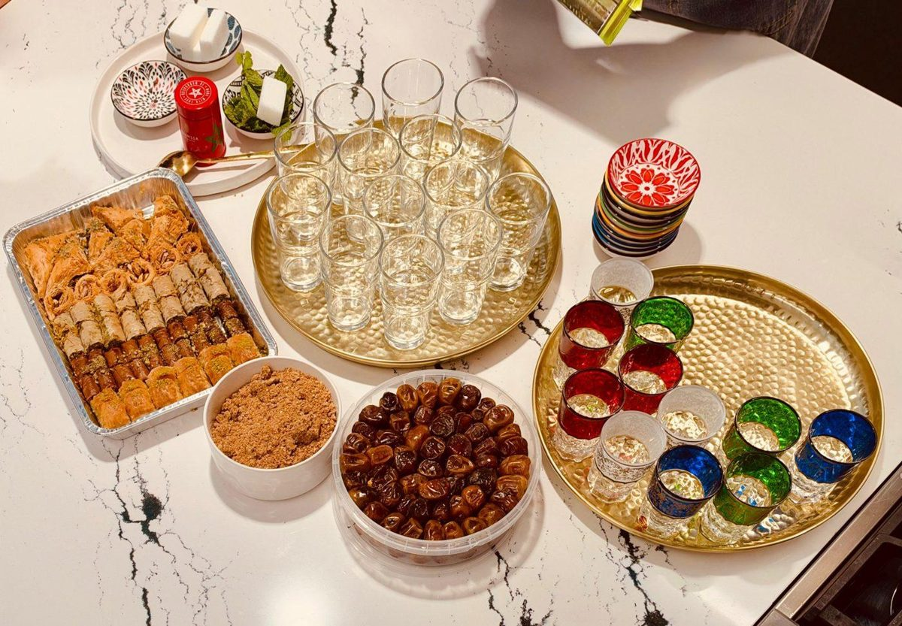
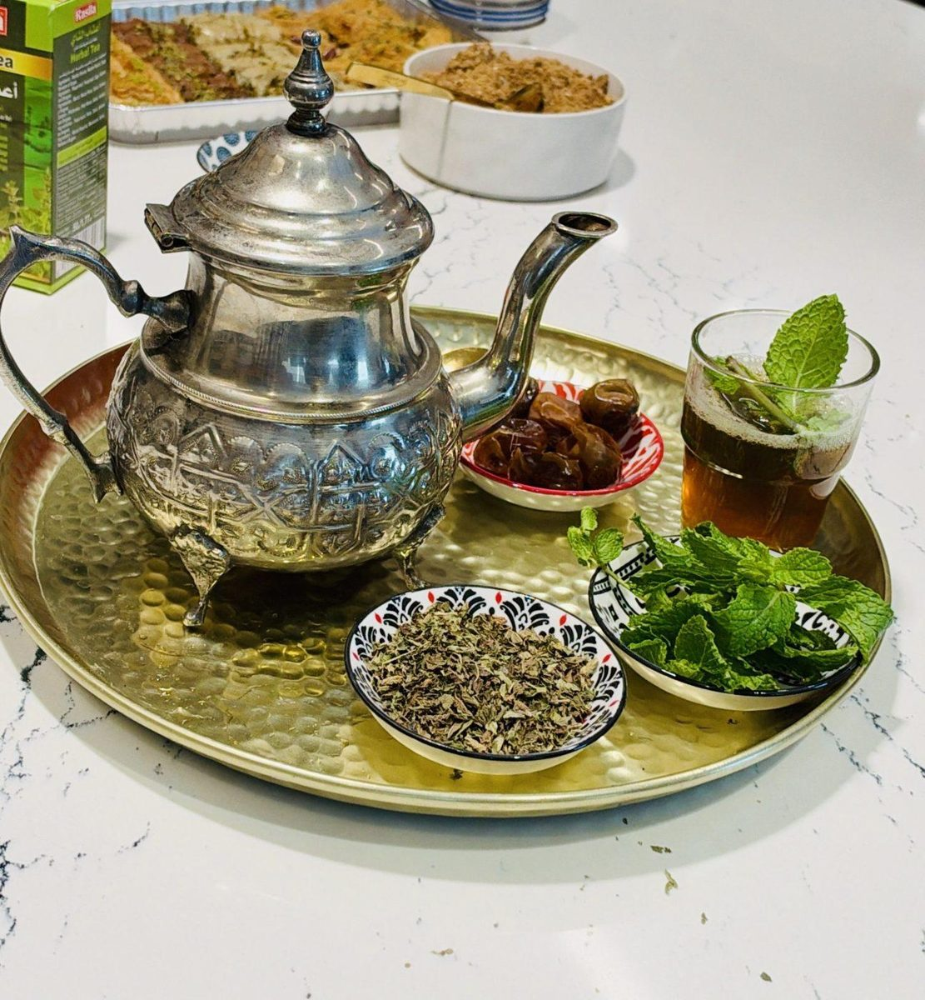
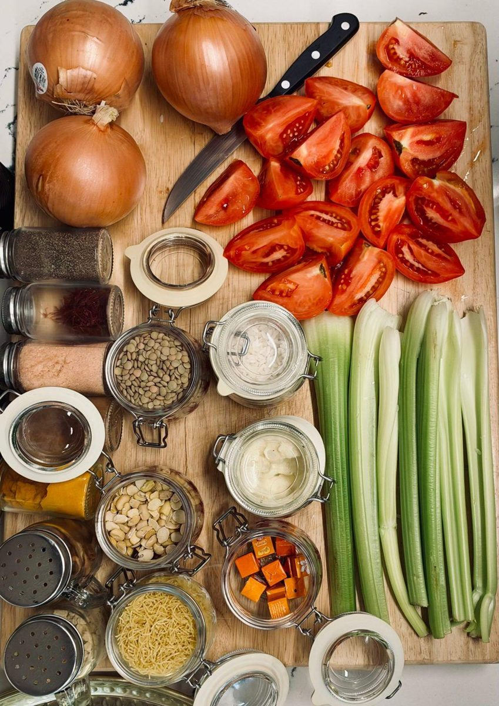
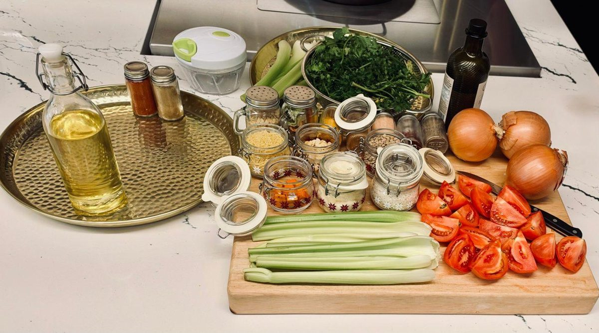
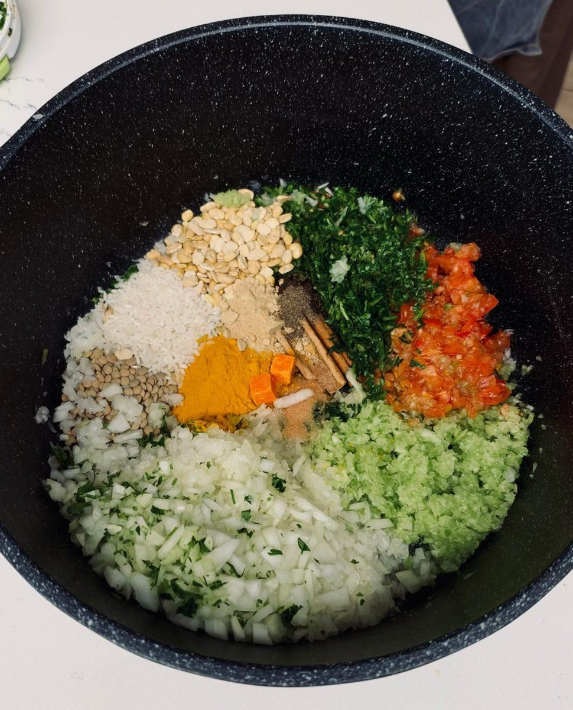
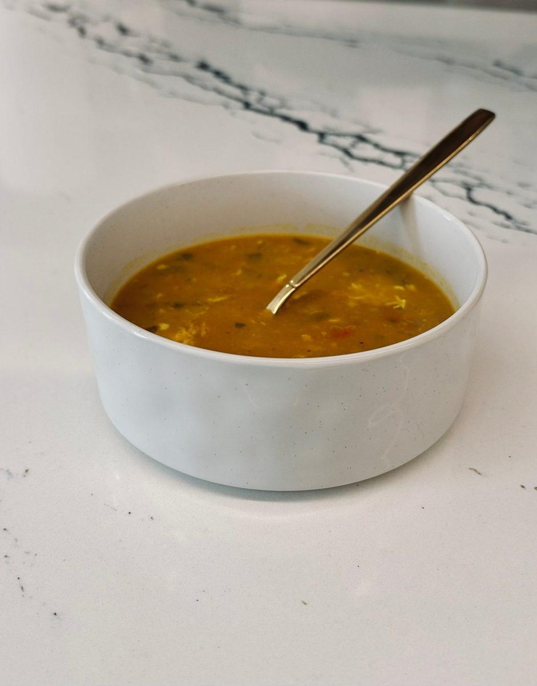

Before a single onion was chopped, the table was already set. Hammered brass trays held rows of tea glasses, some clear and some jewel-toned in red, green, and blue. Baklava, dates, with fresh mint and sugar cubes waiting beside them. That was a recurring lesson in Moroccan hospitality: the welcome comes before the meal.

The Setting
The kitchen was bright and modern as expected of the cooking studio, but the Moroccan touches made it feel warm and lived-in. An engraved silver teapot sat on a brass tray, hand-painted bowls held dried and fresh mint, and about two dozen glasses suggested we were expecting company, and we were. Mr. Samir Fkiyi and Iman from the Moroccan American Cultural Society of Florida joined us, along with Ustada Raja's brother. Ustada Raja, who led the cooking, introduced the class to her guests before anything else, and the room felt communal and conversational rather than like a lesson.

Ustada Raja's approach was deliberate. Every ingredient was laid out in its own jar or pile before the pot touched the stove, and the vegetables were chopped fine or blended so they would dissolve into the broth. As from the first cooking demo with Ustada Raja with the Msemen, ingredients were added using only the eyes and not actual measurements were taken.
Tea and Hospitality
Before we cooked anything, Ustada Raja started with mint tea. Making it first set up a conversational atmosphere, and while it brewed we revisited why hospitality matters so much in Moroccan culture. When Moroccans invite people into their home, the guests are treated as family. In the saloon, the minimum is tea and cookies, even if nothing else is in the house, and food is always put on the table without the guests having to ask, so they feel more at home.
We also went over two points of etiquette. Tea is served counterclockwise, and it is poured from a tall height to build foam. That habit comes mainly from regions near the Sahara, where the foam works as a layer of protection against dust getting into the glass.
Once everyone had a glass of tea and a piece of baklava, we learned that the sweets on the table were not Moroccan. Pistachios are not traditionally used in Moroccan baklava, and syrups were uncommon because they were hard to preserve for long periods. When a substitute such as butter or honey was used, it was kept for special occasions, so treats like these would not usually be found in a Moroccan home.
Making the Harira
With the tea served, we turned to the harira. As we prepped the ingredients, we learned that Mr. Samir Fkiyi used to be a chef. He chopped the coriander and told us about his life and experiences while the other ingredients were blended and added to the pot.
While it cooked, Ustada Raja explained that harira is a staple during fasting because it is so filling, and that a pot like ours could easily serve 20 or more people. Iman and Mr. Samir then introduced their organization, which works to connect Moroccan students back to Morocco and students in Morocco to the United States. Their goal is to build a bridge and keep Moroccan culture alive across the distance between the two countries.
What I Saw, Heard, and Smelled
The colors alone were memorable: golden onions being chopped bringing tears to Serene and Kartheek, bright red tomatoes, pale green celery, deep green coriander, turmeric, and the thin red threads of saffron. The textures ranged from tender lentils and soft rice to silky broth, with crisp baklava and sticky dates on the side.

Watching the process made me feel curious to see how the ingredients would turn into a soup, also the process felt calming due to the conversational atmosphere.
The Ingredients: A Pot Full of Layers
Harira is hard to define because so much goes into it. Lentils, split fava beans, and rice make it hearty enough to break a fast. Onion, celery, parsley, and cilantro build a fresh, green base. Tomato adds brightness and color, and turmeric, ginger, black pepper, cinnamon, and saffron add warmth rather than heat. Bouillon and oil give depth, and vermicelli and egg finish it with a silky texture.

What stood out is how the dish reflects Moroccan values. It rewards patience, since it simmers slowly. It is built on layering, with earthy, sour, sweet, and herbal notes meeting in one bowl. And it expresses generosity: a big pot is made to be shared, then served with dates, sweets, and mint tea.
What surprised me was the use of celery, as an indian I haven't encountered celery in the kitchen and I have never tasted it before, I knew nothing about the ingredient, so I was curious to see how it would play into making the harira, also in my culture I have seen saffron typically used in making sweets and have never thought to use it in making a soup.
Harira Recipe
The pot we made in class could easily serve 20 and more.

- 3 large onions, finely chopped
- 6 to 8 celery stalks, pulsed fine
- 3 to 4 ripe tomatoes, crushed or pureed
- 1 large bunch each parsley and cilantro, finely chopped
- lentils
- dried split fava beans
- rice
- 1 handful vermicelli
- 2 tsp turmeric, 1 tsp ginger, 1 tsp black pepper, 1 cinnamon stick, a pinch of saffron, salt to taste
- 1 to 2 bouillon cubes
- olive oil
- 2 to 3 eggs
Method
- Add the onion, celery, tomato, herbs, legumes, rice, spices, bouillon, and oil to a large pot.
- Cover with 3 to 4 liters of water, bring to a boil, then lower to a gentle simmer.
- Cook for 20 to 40 minutes, stirring occasionally, until the lentils and beans are soft and the soup has thickened.
- Add the vermicelli and eggs last.
- Season to taste and serve hot with dates, baklava, and mint tea.

Tasting the Harira
The harira was thick and was served with pita bread. Eaten together, it was a simple but filling dish, and it left me feeling relaxed and a little sleepy. The Harira reminded me of a Lentil Dal, but was more thick.
What Stayed With Me
The highlight was Mr. Samir chopping and telling stories, and the first taste. What stayed with me afterward was how calm the meal left me.
The rhythm of the afternoon shaped how I connected with the dish. We started with tea and conversation, cooked while Mr. Samir told his stories, and heard about the guests' work while the pot simmered. Nothing felt rushed, and that unhurried pace turned cooking into something closer to a visit than a task.
The biggest cultural insight is that in Moroccan culture, food is an act of welcome. A pot of soup, a tray of sweets, and a glass of mint tea together say you are valued here, and you can taste that in every spoonful.
The guests' organization added a second lesson: a culture can be kept alive across distance when people share food, stories, and time together, as we did that day.
← Back to the journal